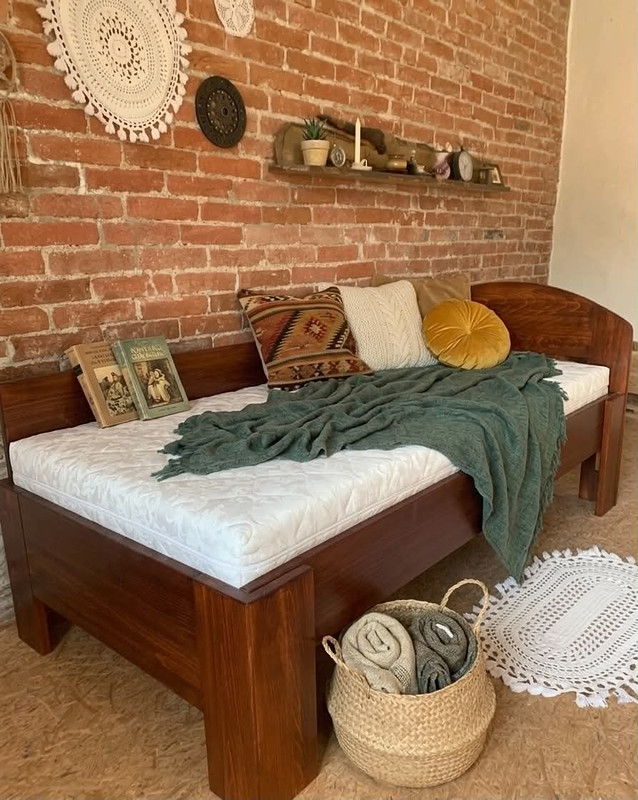
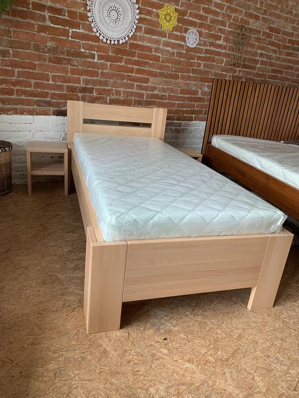
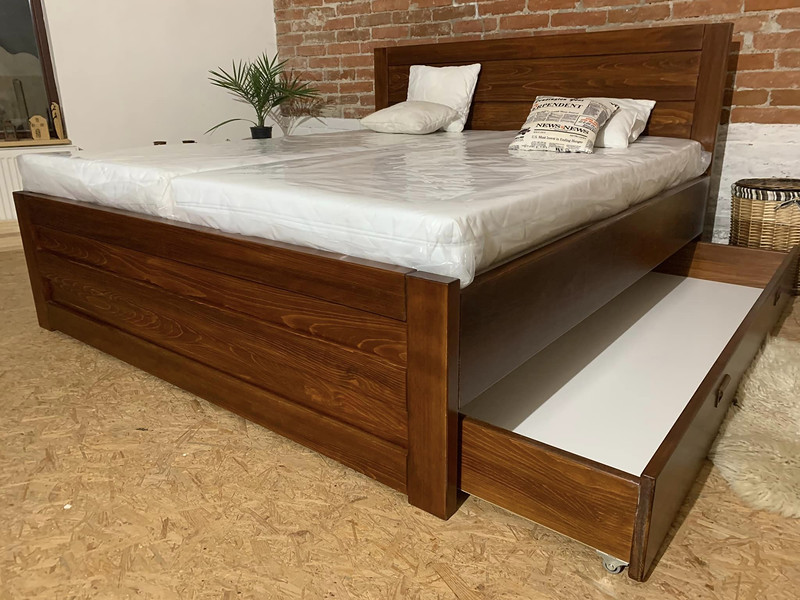
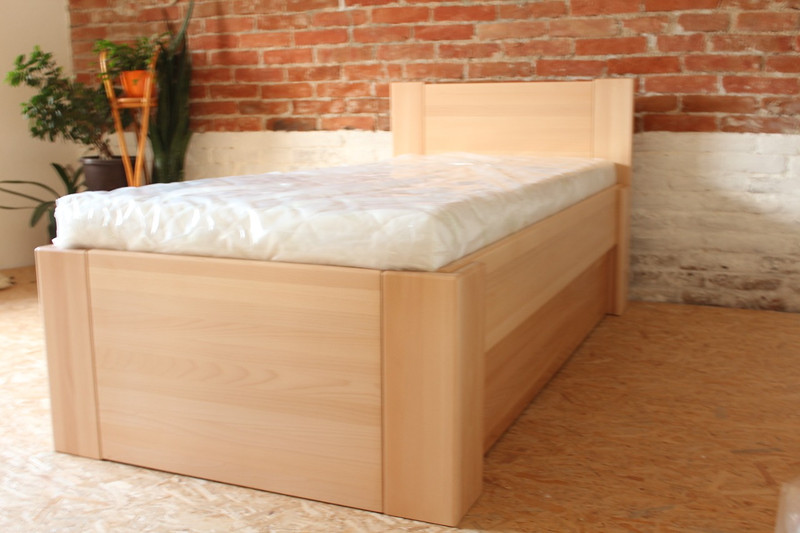
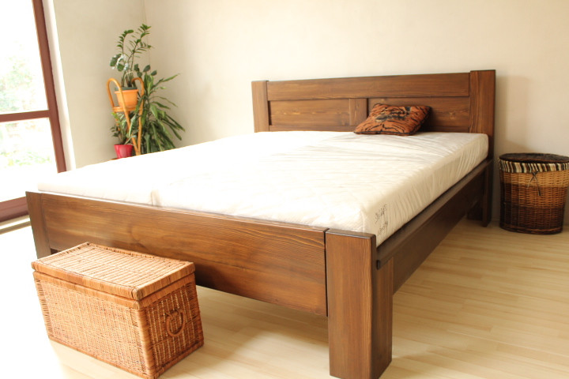
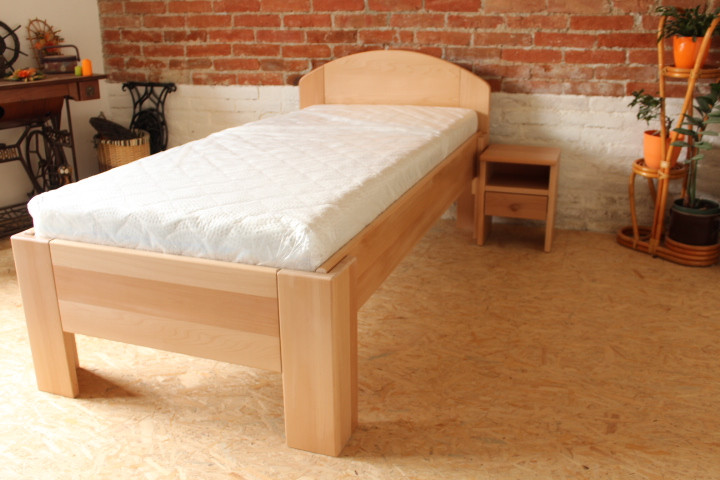
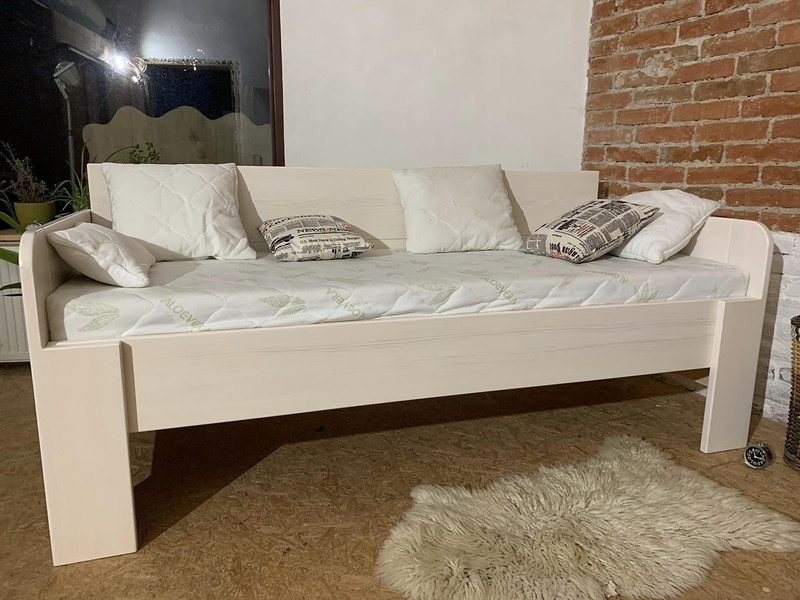
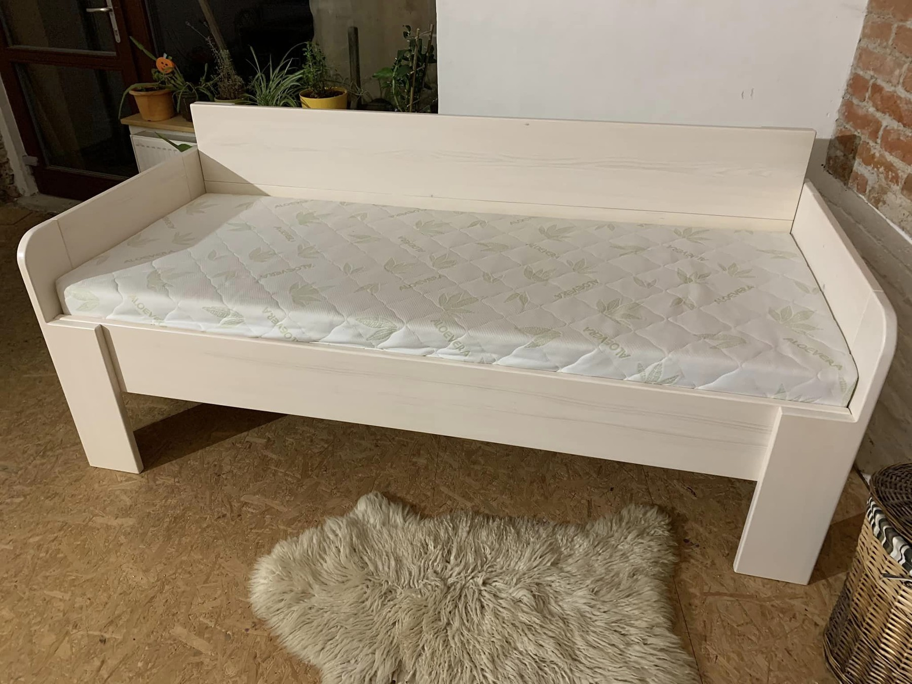

Senior matrace Arela Plus
studená pěna, tuhý okraj
výška 24 cm · do 150 kg · tuhost H3
9 250 Kč
Zvýšené postele z masivu s ložnou plochou 55, 60 nebo 65 cm k povrchu matrace. Pro kloubní potíže kyčlí a kolen, bolesti zad a těžké vstávání.

Jednolůžko z masivního přírodního buku v dekoru moření Antik.

Bukové jednolůžko s čelem typ Pavla.

Vysocezátěžové dvoulůžko z masivního buku, čela v 3D profilovém provedení, roz. na matrace 180x200cm.

Nadimenzovaná buková postel s vyvýšenou ložnou plochou na v. 65cm k povrchu matrace (je možné změnit).

Bukové zvýšené manželské dvoulůžko, tloušťka materiálu masiv buk 42mm, rozměry na matraci 180x200cm.

Jednolůžko z masivního přírodního buku, rozměry na matraci 90x200 cm nebo 80x200cm ( jiné rozměry na poptávku).

Jednolůžko Luneta v provedení gaučového stylu, zadní zabrána je nosná a vhodná k plnohodnotnému opření.
Senior matrace mají zpevněný okraj z tuhé pěny, na hraně se nepropadnete. Vyzkoušet je můžete na prodejně v Němčičkách.
studená pěna, tuhý okraj
výška 24 cm · do 150 kg · tuhost H3
9 250 Kč

gelový efekt, tuhý okraj
výška 24 cm · do 150 kg · tuhost H2 / H3
13 300 Kč

hybridní pěna, tuhý okraj
výška 24 cm · do 130 kg · tuhost H2 / H3
8 750 Kč

hybridní pěna, tuhý okraj
výška 18 cm · do 120 kg · tuhost H2 / H3
6 440 Kč

měkčí, tuhý okraj
výška 24 cm · do 150 kg · tuhost H2
9 250 Kč
Klasická postel má ložnou plochu ve výšce 55 cm, seniorská 60 cm. Pro vyšší postavy ji zvedneme na 65 cm. Cílem je, aby se dalo sednout a vstát bez zbytečné námahy.
Zdravotní senior matrace mají zpevněný okraj z tuhé pěny, takže se na hraně nepropadnete. Střed jádra je z hybridní nebo studené pěny. Vyzkoušet je můžete na prodejně.
Podpěrnou zábranu nebo madlo (750 Kč) zhotovíme pevně zčepované, ne přišroubované, takže se nekývá.

mají ložnou plochu ve zvýšené výšce 60cm nebo klasických 55cm případně pro vyšší postavy je možné ložnou plochu navýšit na 65cm, aby se usnadnilo vstávání. Jsou vhodné pro uživatele s kloubními problémy kyčlí a kolen, při bolestech zad a těžkém vstávání. Pro ještě příjemnější spaní doporučujeme:
pro pohodlné vstávání a usedání s pevnou oporou. Díky zpevněnému okraji z tuhé pěny poskytují stabilitu, která zvyšuje hlavně bezpečnost. Střed jádra je vyroben z kvalitní hybridní nebo studené pěny pro komfort páteře a relaxaci svalů.
Poptávkový a objednávkový formulář je vždy u nabídky konkrétní postele nebo matrace, kde je možné uvést další požadavky, jiné rozměry, rošt, matraci nebo dekor moření. Rádi vystavíme nabídku s dovozem, u kterého nabízíme odbornou montáž zdarma se zárukou 5 let.
Nejčastěji 60 cm k povrchu matrace. Klasická výška je 55 cm a pro vyšší postavy děláme 65 cm. Výšku upravíme podle vaší postavy a zvolené matrace.
Pro uživatele s kloubními problémy kyčlí a kolen, s bolestmi zad a s těžkým vstáváním.
Ano. Jsme zakázkové stolařství, takže šířku, délku i dřevinu uděláme podle potřeby.
Napište nebo zavolejte. Vyrobíme podle vašich rozměrů, nákresu nebo fotky.